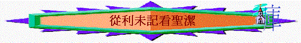

一.聖潔的原因
1.神的命令→人的順從
『你們要聖潔．．．．』利１９：２、彼前１：１６
2.神的屬性→人的需要
『因為我是聖潔的。』利１９：２、彼前１：１６
~『．．．．非聖潔沒有人能見主』來１２：１４
~『．．．．成為聖潔，能以得救』帖後２：１３
~『．．．．成為聖潔，無可責備』帖前３：１３
3.神的心意→人的目標
『我是耶和華你們的神；所以你們要成為聖潔，因為我是聖潔的。你們也不可在地上的爬物污穢自已。』利11:44
『神的旨意就是要你們成為聖潔，遠避淫行；』帖前 4:3『主知道搭救敬虔的人脫離試探，把不義的人留在刑罰之下，等候審判的日子。』彼後 2:9-『你們要追求與眾人和睦，並要追求聖潔；非聖潔沒有人能見主。 』來 12:14
二.聖潔的意思
1.清潔
2.沒玷污、沒瑕疵
3.沒罪
4.分別出來，同世俗、世界有分別
5.歸神
6.似神
聖潔的意義充滿了利未記的內容
三.成聖的方法
～藉祭司獻祭
～藉祭牲流血
～自潔
～分別出來
～不效法
～遵守神的命令
～用膏油膏
～不玷污
～歸神
四.聖潔的方向
1.人的奉獻（利１－１０）→要蒙神悅納
~特點：很多『供物』『獻』『蒙悅納』『蒙赦免』『馨香』『祭』等字眼
2.人的生活（利１１－２０）→要分別出來
~特點：很多『不可』『不潔』『分別』字眼
3.人的事奉（利２１－２２）→要尊神為聖
~特點：條例對象針對祭司
4.人的日子（利２３－２４）→要記念真神（分別出來）
~特點：關乎很多節期，日子條例
5.人的產業（利２５－２７）→要歸神為聖
~特點：關乎以色列民入到迦南，他們的土地，產業，僕人，承諾給神之物的處理。